The Main Focus of this Lab
- In this lab, you focus on:
- Using random numbers and lists
- Using loops inside loops
- Using an extra Python library
What You Will Learn in This Lab
- In this lab, you will gain experience in the following areas:
Topic Computer Science/ Programming Concept Random number generation Getting random values using random.randint()Using List Getting items from a list using index list_name[index number]Repeating things using loops Using for loops ( for ...)Building nested loops, i.e. a loop inside another loop Using range()with a for loopUsing the turtle graphics module Drawing shapes by moving the turtle around Using named colours Control visibility of the turtle by turtle.showturtle()andturtle.hideturtle()Moving forward in an arc with a given degree using turtle.circle()Drawing solid circles using turtle.dot()Change the turtle speed using turtle.speed()Control screen update by turtle.tracer()Using extra library Importing extra library by import
Overview
- You will create a simple 'fireworks' animation by writing your own Python turtle graphics code
- Here is an example video of running the fireworks program:
- In the later part of this lab we will add some sounds to the program, so it is a good idea to bring your earphones
Lab Content
- 1. Getting started
- 2. Running some preparation code
- 3. Using a loop
- 3.2. Exploding a firework
- 3.2.1. How to draw a ring of dots
- 4.1. Creating fast explosions
- 4.2. Hiding the turtle
- 4.3. Adding gravitation effect
- 4.4. Enabling firework sounds
Lab Procedures
1. Getting started
Video for Part 1-2
- A template file (fireworks.py) is given to you as a starting point
- You also need a picture as the background of your program
- This file needs to go in the same directory as your program
- After downloading the file, you can use IDLE to edit the source code
{kind=link}
2. Running some preparation code
- In the starting code given to you, you can see that there is a 'preparation stage' to perform initialization
- Some important variables are set up and initialized, before the main part of the program starts
- This includes setting up the screen size, setting the maximum size of the firework and how many fireworks we will generate each time
- The turtle module is also initialized
- This includes setting up the screen in appropriate size with a background image, and setting up the thickness of the lines
- You may find this line of code interesting in the program:
screen_width, screen_height = 900, 564
- The above line of code sets the values of both screen_width and screen_height in a single line
- It is equivalent to this:
screen_width = 900 screen_height = 564
3. Using a loop
Video for Part 3.1
- We use a loop to repeatedly send out fireworks, while making some difference for each iteration
- In each iteration of the loop, a firework is sent into the sky using two steps:
- Shoot the firework from the bottom to the sky
- Explode the firework
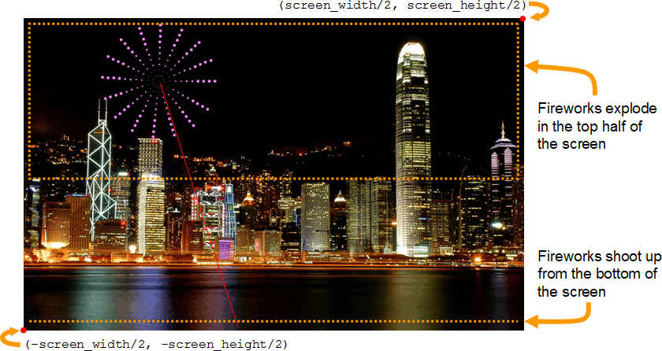
3.1. Shoot the firework up into the sky
- Before exploding the firework, we have to get the firework to the position of the explosion
- A firework is shot from the bottom of the screen to the sky
- We use the turtle to show the position of a firework bomb when it is shot into the sky by:
- positioning the turtle randomly at the bottom of the screen
- showing the movement of the bomb by moving the turtle to a random position in the upper screen
- Before you start, please be reminded that the origin of the coordinate system in our program is at the centre of the screen, which means:
- the bottom left hand corner is
(-screen_width/2, -screen_height/2), and - the top right hand corner is
(screen_width/2, screen_height/2)
- the bottom left hand corner is
3.1.1. Initializing the starting position of a firework
- To shoot a firework, firstly, we initialize a fixed y position, i.e. the bottom of the screen:
starty = -(screen_height/2)
- And we initialize a random x position:
startx =
random value between -(screen_width/2) and (screen_width/2) - To generate a random number you can use
random.randint() - To use
random.randint(), you should provide 2 integers inside the bracket - There will be a problem if you directly put
-(screen_width/2)and(screen_width/2)torandom.randint() - When
-(screen_width/2)is executed, the result will have a decimal place - When
(screen_width/2)is executed, the result will have a decimal place - To convert the value into an integer, you can use
int():int(value to be converted to integer) - Then you put the turtle at the starting position by:
turtle.up() turtle.goto(startx, starty) turtle.down()
turtle.up()andturtle.down()are used in the above code as we don't want to see the turtle drawing a line while it moves to the starting position
3.1.2. Determining the destination of the firework
- After setting the starting position, we randomly assign another position to be the destination of the firework
- It looks good if the firework explodes in the top part of the screen, so we generate a random position in the upper half
destx =
random value between -(screen_width/2) and (screen_width/2) desty =random value between 0 and (screen_height/2)
3.1.3. Move the bomb
- Finally we move the turtle so that a bomb (a red circle represented by the turtle) is moved from the starting position to the destination position using the following codes:
turtle.color("red") turtle.goto(destx, desty)
3.2. Exploding a firework
Video for Part 3.2
- The turtle is now in the right position, i.e. the firework has been shot into the sky, so we can start to 'explode' the firework
- Below is an example of an exploded firework:
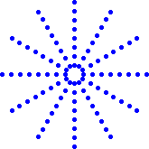
- The rings of explosion in a firework are represented by rings of dots in the above picture
- The idea of our program is to use the turtle to draw a picture similar to the above for each firework
- We explode a firework like this:
- Pick the colour, size, and number of explosion directions for the firework
- For example, the firework shown above has a blue colour, a radius of 80 pixels in size and 12 explosion directions
- We can pick a colour randomly from the list of colours initialized at the top of the file:
# A list of colours to choose from for a firework firework_colours = ["red", "orange", "yellow", "green", "cyan", "blue", "violet"]
- If you want to use other colours, you can refer to this webpage in one of the previous labs, which contains the names of all the colours you can use
- You can use
random.randint()to pick one of the colours from the list of colours by:- Randomly selecting an index from the following range:
- The index of a list starts from 0
- The index of a list ends at (length of the list - 1)
- Accessing the corresponding item in the colours list:
colour = firework_colours[
a random index from 0 to (length of firework_colours - 1) ] - Randomly selecting an index from the following range:
- Pick the colour, size, and number of explosion directions for the firework
- For the firework size, you can randomly generate any number in an appropriate range:
firework_radiusis a variable initialized at the top of the file which determines the maximum size of the fireworks- The size of the current firework can be any value between
firework_radius/2andfirework_radius
- For the number of explosion directions, it can be any value between 10 and 20
for loop to draw each ring of the explosion
- Starting from the smallest radius, probably 10
- For each ring of the explosion, draw a dot at each explosion direction
- Gradually increase the radius until it is larger than the firework size
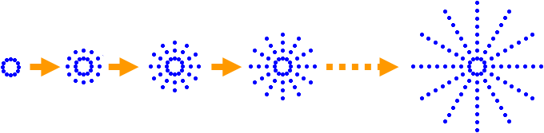
- Each increase of radius can be fixed at, for example, 10 pixels
3.2.1. How to draw a ring of dots
- In the procedure above, you can see that each ring is drawn using a certain number of dots (number of explosion directions)
- We use turtle.dot() to produce a dot
- Inside
turtle.dot(), you put a integer for the size (diameter) of the dot
- Inside
- To do that, first let's think of drawing rings of solid lines, i.e.
turtle.circle()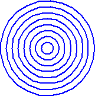
- Then we proceed to draw rings of dots step by step
- The following example illustrates one of the ways to draw a ring with 12 dots (i.e. 12 explosion directions):
- In these diagrams, lightgray is used to show the turtle after the previous step has finished and black is used to show the turtle after the current step
Step 1. Step 2. Set the turtle to point to the right Move forward by the radius of the ring 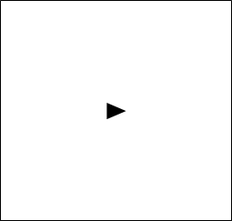 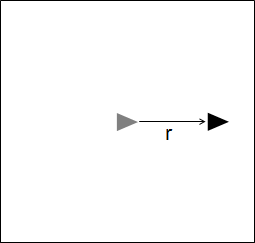 Step 3. Step 4. Turn left at right angle Draw a dot at the current position 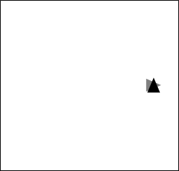 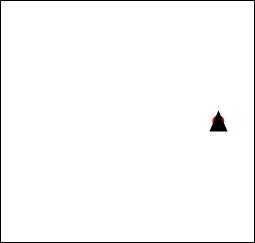 Step 5. Step 6. Move forward in an arc with a twelfth of 360 degrees Draw a dot at the current position 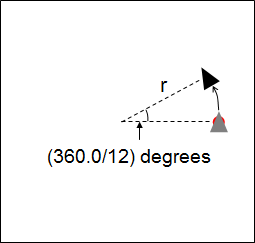 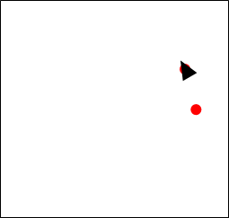 Step 7. Step 8. Repeat the move step (step 5) and the dot step (step 6) 12 times, until all dots are drawn Move forward in an arc with a twelfth of 360 degrees for the last time 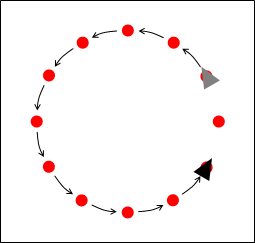 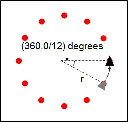 Step 9. Step 10. Turn left to face the centre Move back to the starting position 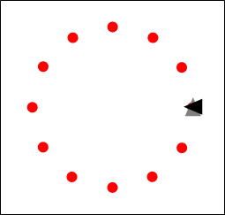 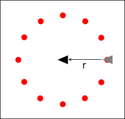 Done! - Notes:
- Some of the steps move the turtle without drawing anything
- You need to use
turtle.up()andturtle.down()at right places so that nothing is drawn - From step 5 to step 8, the turtle has to be able to move in an arc
- You need to use
turtle.circle()with an appropriate angle, i.e.:turtle.circle( radius of the ring , 360 / number of explosion directions )
- To ensure that the turtle is facing the correct directions, we need to have a command that sets the absolute direction of the turtle
- We can use
turtle.setheading()to set the absolute direction of the turtle turtle.setheadingworks like this- When
turtle.setheading(0)is used, the turtle points to the right - When
turtle.setheading(90)is used, the turtle points to the upwards - When
turtle.setheading(180)is used, the turtle points to the left - When
turtle.setheading(270)is used, the turtle points to the downwards - Here is an animation on how
turtle.setheading()works
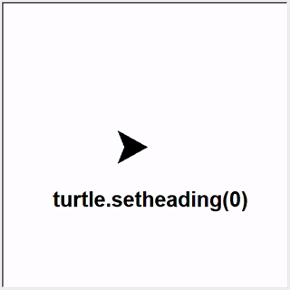
- You can make use of
turtle.setheading()to set the absolute direction of the turtle - Here is the pseudocode for explaining the logic:
for every radius up to the maximum radius: turtle face to the right move forward by radius for every direction: make a dot move forward in an arc (using command turtle.circle() and values (radius, degree) to move) face to the centre move back to the centre
4. More fancy effects
Video for Part 4
4.1. Creating fast explosions
4.1.1 Speed up the turtle speed
- Up to this point, the animation of drawing a firework is quite slow
- The slow speed is useful while we are developing the system so that we can see all the stages, but it looks too slow for a real firework effect
- To adjust the speed of the turtle animation use
turtle.speed() - So to speed up the process, set up the turtle speed at the beginning of your program:
turtle.speed(6)
- Here is some explanation on the number value used in
turtle.speed()- 1 is slowest, 6 is normal, 10 is very fast, 0 means nearly no animation i.e. fastest in
turtle.speed()
- 1 is slowest, 6 is normal, 10 is very fast, 0 means nearly no animation i.e. fastest in
4.1.2 Temporarily stop updating the display
- We also don't want to use any animation during drawing of the ring pattern, so that the resulting firework pattern suddenly appears
- The idea is like this:
- We stop the animation by:
turtle.tracer(False)
- During that, the turtle is undergoing drawing the pattern of a ring.
- After drawing the pattern, update the display by:
turtle.tracer(True)
- To do the next ring pattern, we stop the animation again by
turtle.tracer(False)
- We stop the animation by:
- We illustrate this idea using the diagram below:
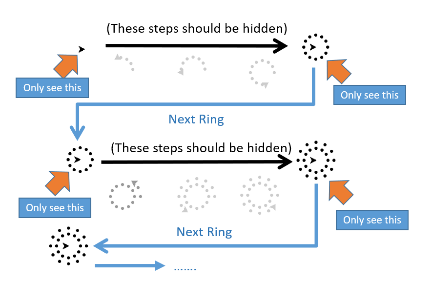 - If you want to show the movement from the bottom to the sky with animation, you need to enable the turtle animation again:
turtle.tracer(True) # Update the screen and show turtle animation from now onwards
- Here is the pseudocode for explaining the logic:
for every ring inside: stop the turtle window update ...draw the ring pattern (mentioned in Part 3.2)... show the result by enabling the turtle window update
4.2. Hiding the turtle
- When the firework is shot or exploded, we can still see the turtle moving around no matter the turtle is drawing things or not
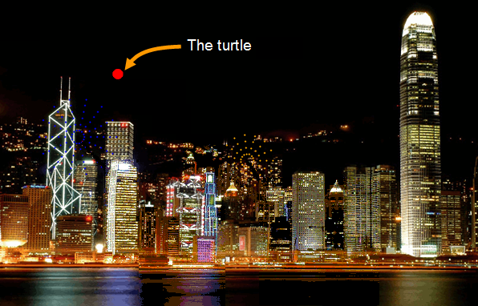
- To make the program more realistic, we can hide the turtle from the screen using the following code:
turtle.hideturtle() # Hide the turtle
- For making it more realistic as shooting the firework, you need to show the turtle during shooting from the starting position to the destination
- If you want to show the turtle again for the next shooting, you show the turtle by:
turtle.showturtle() # Show the turtle
4.3. Adding gravitation effect
- We can further improve the fireworks program by adding some gravitation effect
- Here are the steps to produce gravitation effects
- Make the size of the firework dots bigger when they are further away from the centre
- This involves an adjustment of the size provided to
turtle.dot()when you are drawing the explosion rings - You can try to start like this
- When the first ring is drawn, the dot size is 1
- Dot size 1 is hard to see so actually you cannot see the first ring
- When the second ring is drawn, the dot size is 2
- When the third ring is drawn, the dot size is 3
- And so on...
- Here is an example on a pattern with the radius 90
- You can further improve the value given to
turtle.dot()to make the effect more dramatic - You can calculate the relation between the radius of the current ring and the total firework size
- Then use that size provided to
turtle.dot()when you are drawing the explosion rings - For example, the size of the first 2 rings are similar, and the size of the next 3 rings are similar, and so on...
- Here is a diagram using the above approach
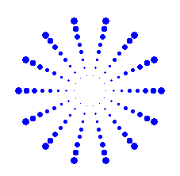
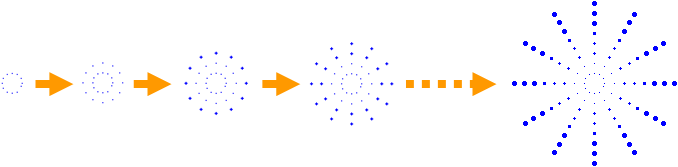
- This involves an adjustment of the size provided to
- You could add a gravitation effect to the firework
- This involves only a minor adjustment of the ring centre when you draw the rings of explosion
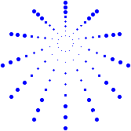
- This can be done by moving the turtle downwards after drawing each ring
- The concept is illustrated here:
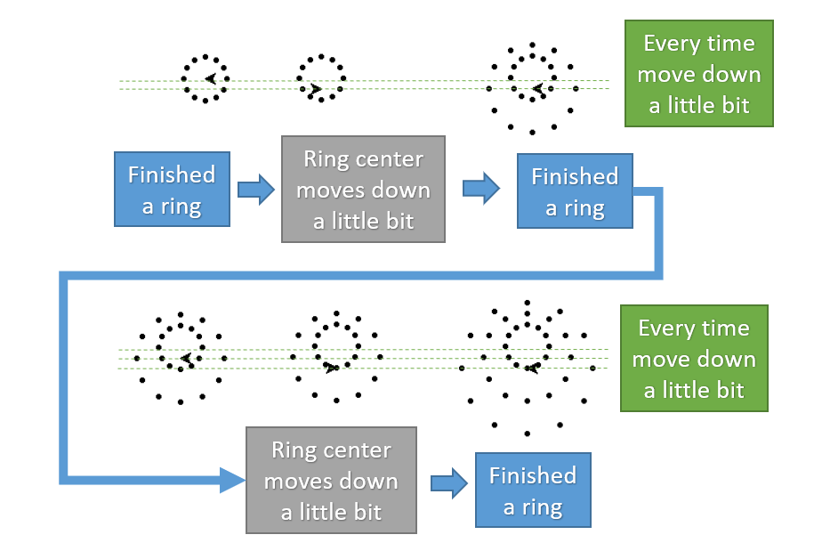 - Here is some pseudocode to help you understand the logic:
for every ring: do the ring pattern (mentioned in Part 3.2) change turtle's direction to face downward move down a little bit- Remember when producing the next ring pattern, the turtle is facing in the same direction at the start
turtle.left()orturtle.right()cannot do that, asturtle.left()andturtle.right()changes according to the relative direction- To ensure that the turtle is facing the correct directions, we need to have a command that sets the absolute direction of the turtle
- We can use
turtle.setheading()to set the absolute direction of the turtle turtle.setheading()works like this- When
turtle.setheading(0)is used, the turtle points to the right - When
turtle.setheading(90)is used, the turtle points to the upwards - When
turtle.setheading(180)is used, the turtle points to the left - When
turtle.setheading(270)is used, the turtle points to the downwards - Here is an animation on how
turtle.setheading()works - You can make use of
turtle.setheading()to set the absolute direction of the turtle
- This involves only a minor adjustment of the ring centre when you draw the rings of explosion
4.4. Enabling firework sounds
- A quiet firework program is not realistic
- We have prepared a special library to play sounds
- This library works on both Mac and PC machines
- You can download the library here, and place it into the same directory as your Python code
- To import the library into your code, you need to add this line to an appropriate place:
import playsound
- Then, you can download the firework explosion sound here and also save it into the same directory
- You can finally add this line of code to where you would like to play the sound:
playsound.play("explosion.wav") - You are not required to understand the code in the
playsoundlibrary - If you want better timing for your Mac sounds: (optional)
- Delete your current version of playsound.py
- Download this version
- Rename the file you just downloaded to playsound.py
Submission
- You have to submit this lab work
- Enter your name and student ID number in the top of your Python code using a comment
- You need to submit within the 5 days following the taught day of your registered lab, before midnight
- The exact times and dates are shown at the end of the marking scheme page
- You can look at the marking scheme to make sure all the parts are done properly
- Submit your work to the COMP1021 Canvas site to the lab assignment for your registered lab section
- Please submit only ONE Python file (fireworks.py)
- You do not need to zip all the files
- You do not need to zip the folder
- You do not need to submit other files such as the background picture, the sound file, and the library file used to play the sound
- Submit your work early, days before the deadline!
- If you find that you have made a mistake after you have submitted your work, you can submit again, as many times as you like, BEFORE the deadline.
- We will mark the most recent submission which is before the deadline.
- You won't be able to submit your work after the deadline!
- Check that you have submitted the correct version of your own file